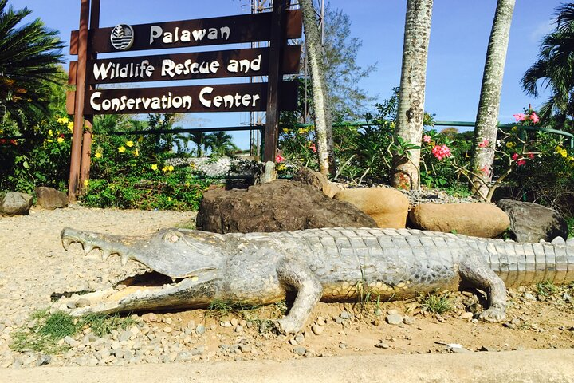

Highlights of Puerto Princesa

Underground River UNESCO World Heritage Site

Honda Bay Day trip island hopping

City Tour Crocodile farm, firefly watching
Plan Your Visit
- Best ForUnderground river, city tours, food
- From Manila1 hour 20 min by air
- TryTamilok, crocodile sisig, fresh seafood
- Don't MissFirefly watching in Iwahig River
- Book AheadUnderground River slots fill fast